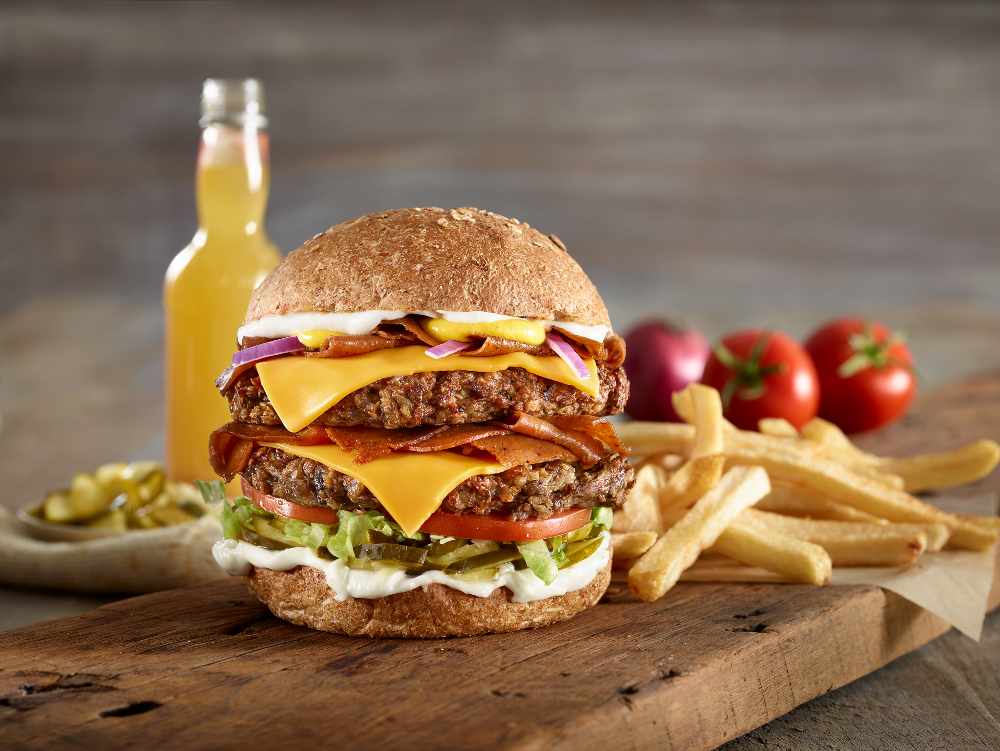

About US The Barclay Hotel is located in downtown Atlanta in the southern US state of Georgia. It is a landmark hotel with an excellent reputation built up over many years.
Centrally located in the heart of the city, we offer visitors to Atlanta every modern comfort so that your stay is guaranteed to be a memorable one.
The hotel is within walking distance of many of the city’s foremost tourist attractions, including the SkyView Atlanta, the Georgia Aquarium, the Centennial Olympic Park, World of Coca-Cola, the Peachtree Center and the Football Hall of Fame. It is also close to the city’s business areas.
As the hotel is in downtown Atlanta, you will also be close to the best restaurants the city has to offer, as well as to popular bars, great lounges and the best in shopping. Broad Street itself is just a couple of minutes away and has a great selection of food chains and boutique restaurants.
We have free wifi throughout the hotel and offer all our guests complimentary continental breakfast each morning. As well as that, we have a 24-hour business center and a 24-hour fitness center, both of which are available for guests to use free of charge.
We also have secure parking right beside the hotel. This is available for a small fee but access is unlimited.
Food is any substance consumed to provide nutritional support for an organism. Food is usually of plant, animal, or fungal origin, and contains essential nutrients, such as carbohydrates, fats, proteins, vitamins, or minerals. The substance is ingested by an organism and assimilated by the organism's cells to provide energy, maintain life, or stimulate growth. Different species of animals have different feeding behaviours that satisfy the needs of their unique metabolisms, often evolved to fill a specific ecological niche within specific geographical contexts.
Omnivorous humans are highly adaptable and have adapted to obtain food in many different ecosystems.
Historically, humans secured food through two main methods:
hunting and gathering and agriculture. As agricultural technologies increased,
humans settled into agriculture lifestyles with diets shaped by the agriculture opportunities in their geography.
Geographic and cultural differences has led to creation of numerous cuisines and culinary arts,
including a wide array of ingredients, herbs, spices, techniques,
and dishes. As cultures have mixed through forces like international trade and globalization,
ingredients have become more widely available beyond their geographic and cultural origins, creating a cosmopolitan exchange of
different food traditions and practices.
